This my concept on Portrait art, where I draw particular people or characters based on my preferences that I usually enjoyed when creating a particular Inspirational creativity, but in some cases this is just a puppy love creation.
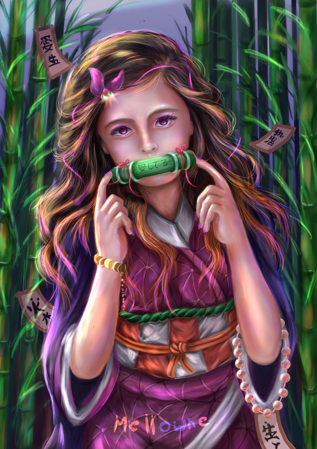 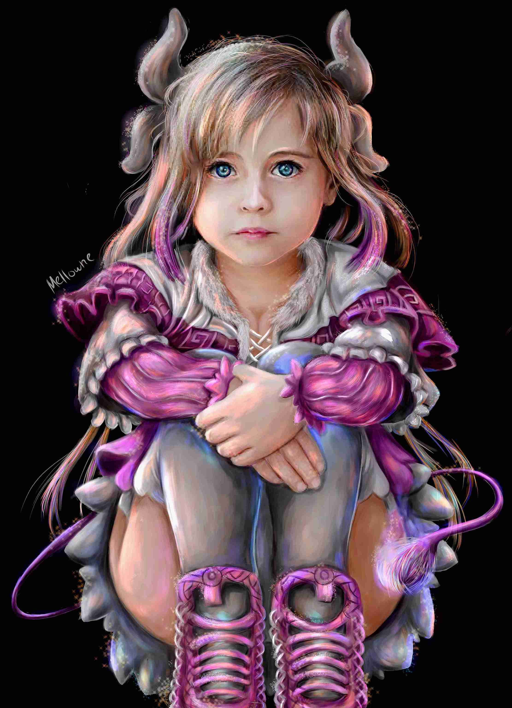 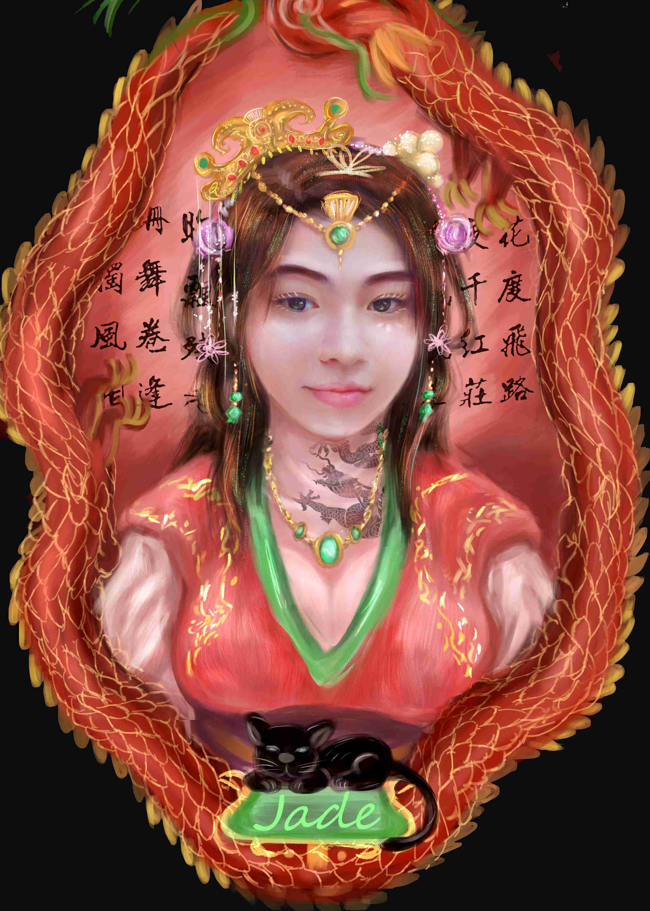
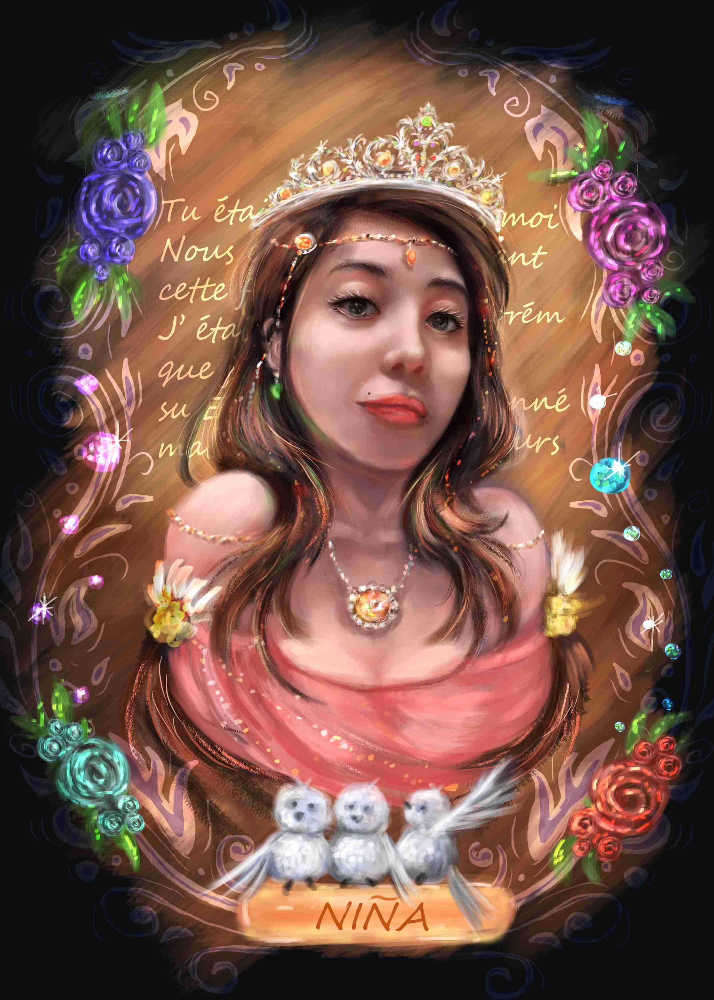
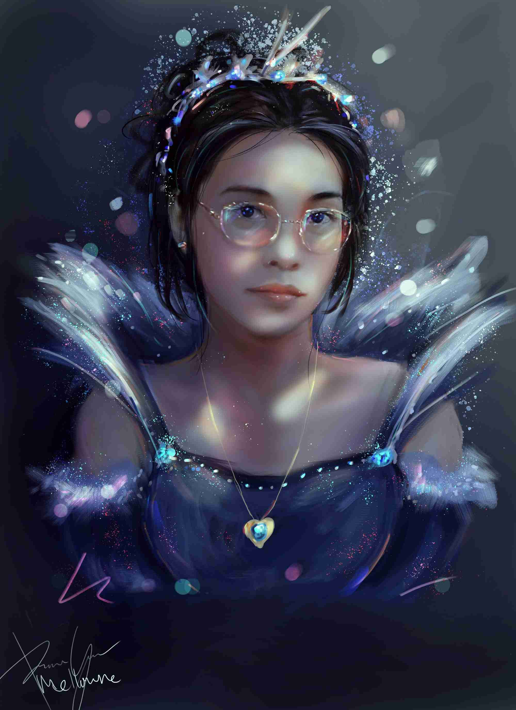
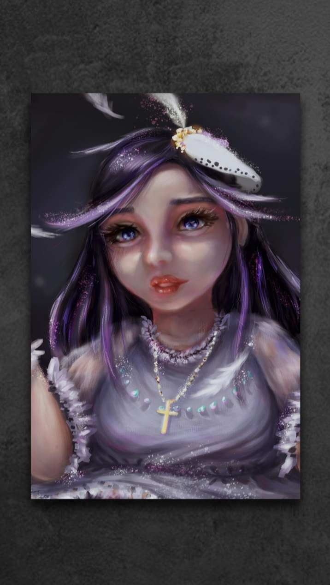
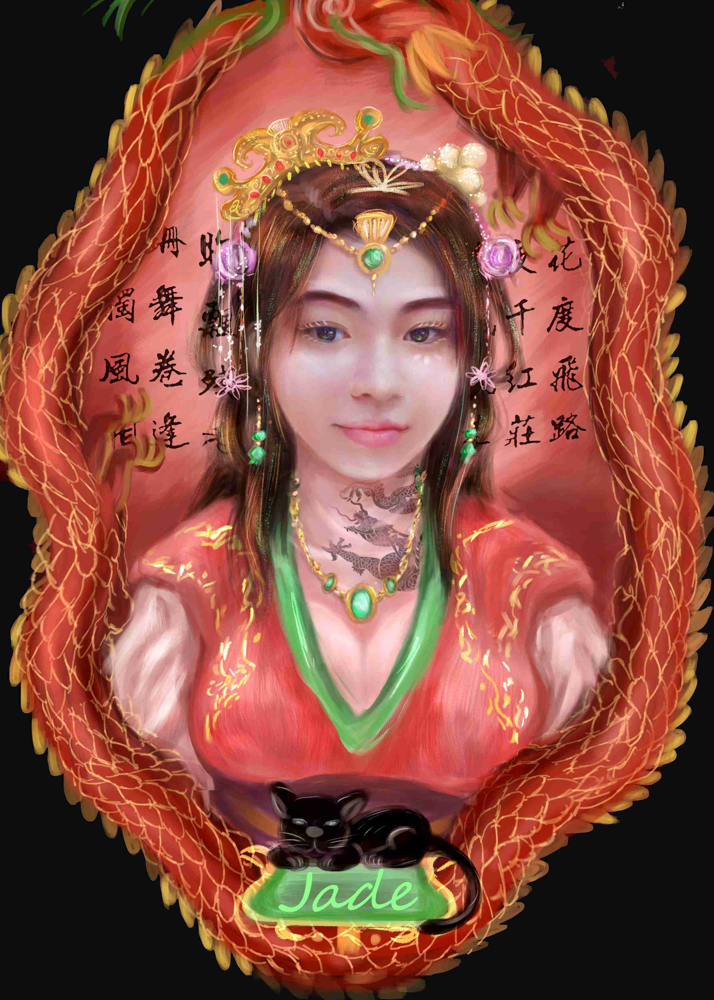
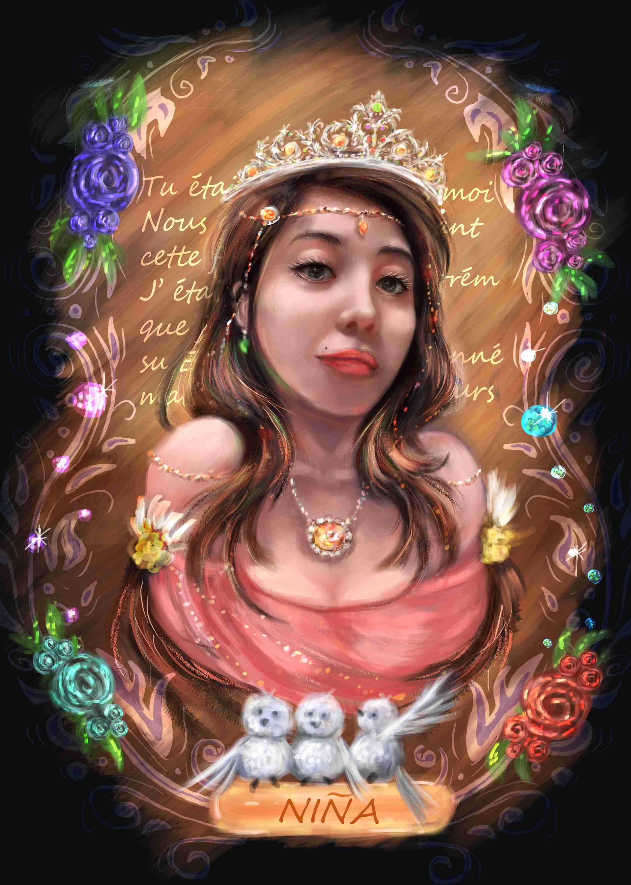
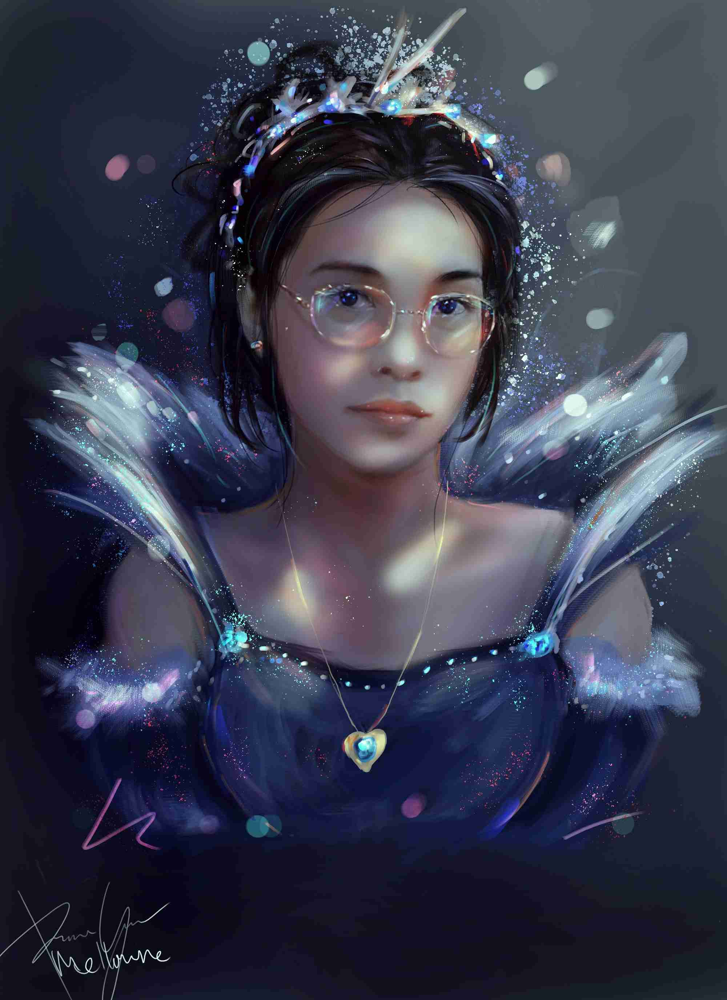
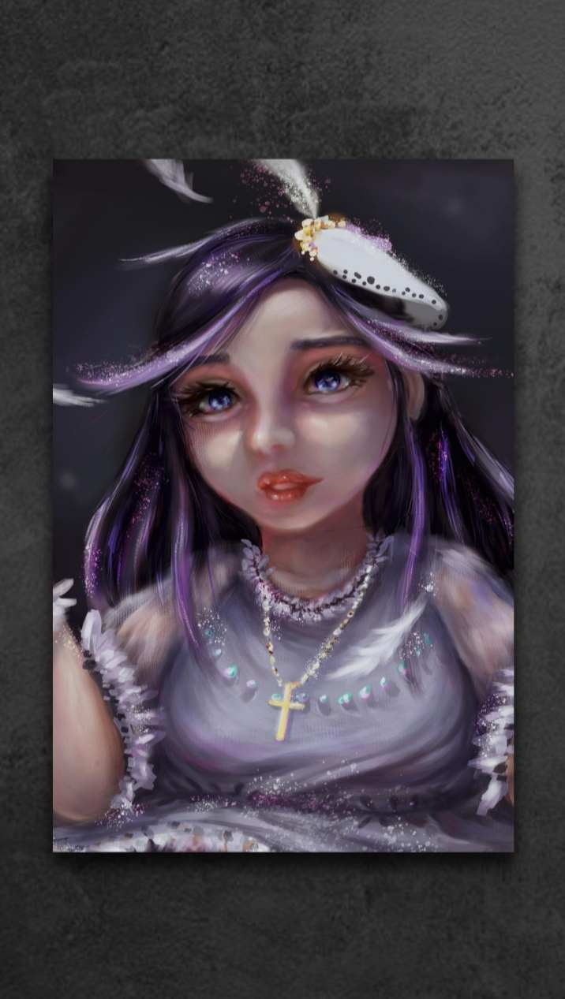
This is some old Sketches I made or newer ones that I work on paper they are all just things I proceed such creativity before I actually put them on actual paper so or less but mostly I enjoyed making off Digital sometimes and quite fun too.
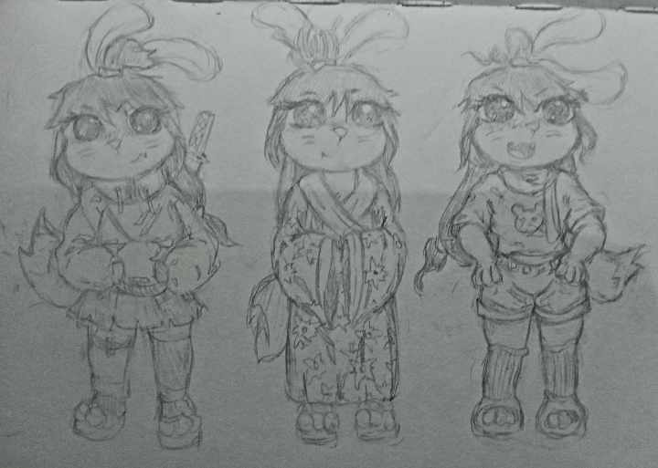 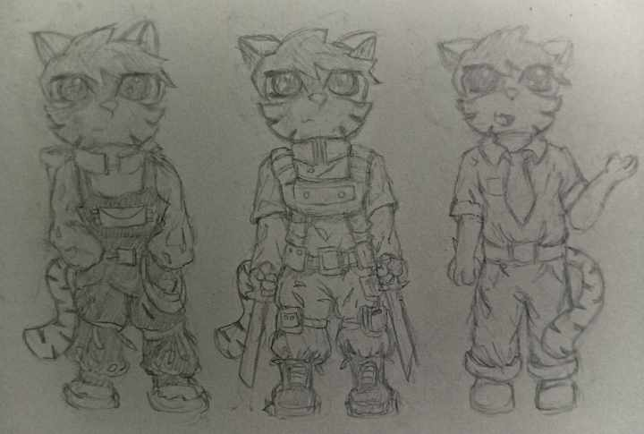 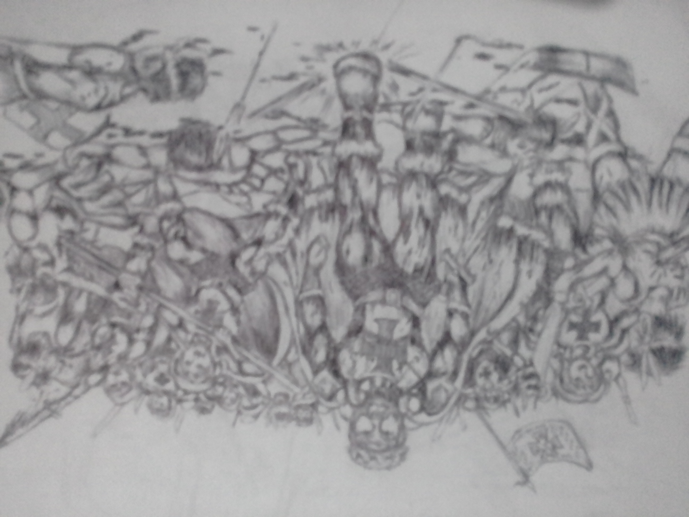 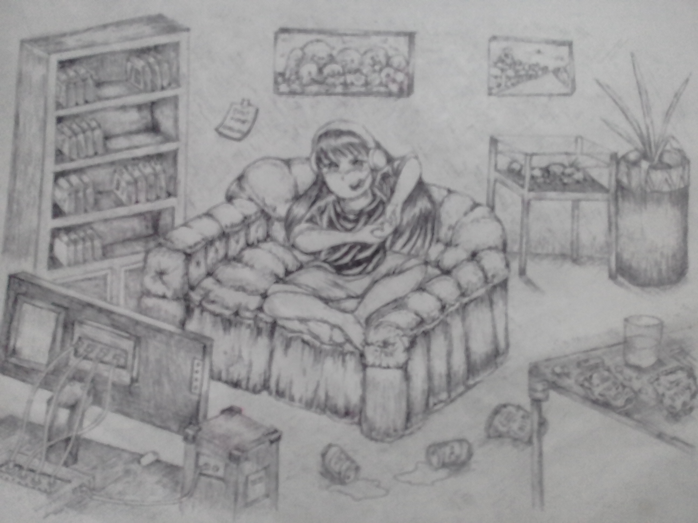